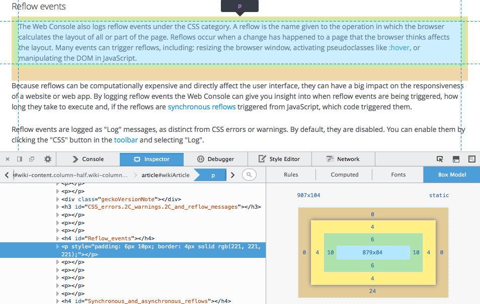
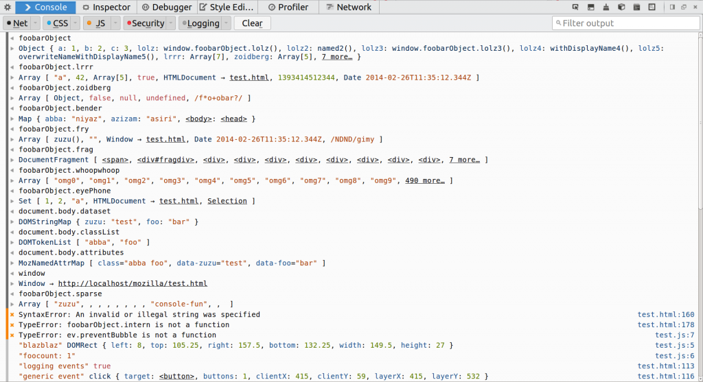
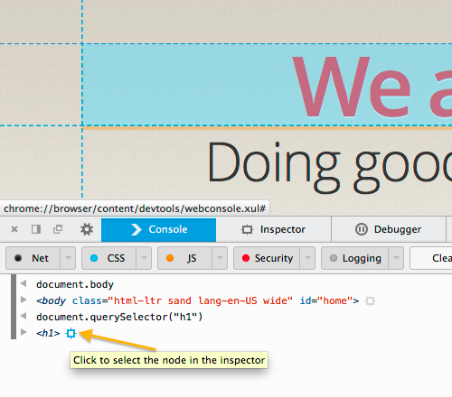
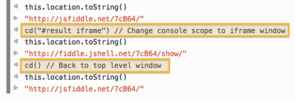
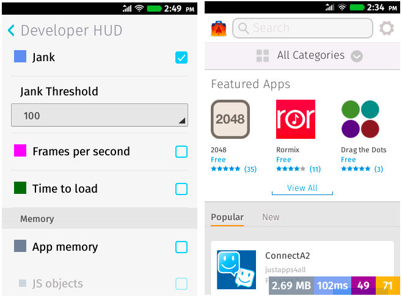
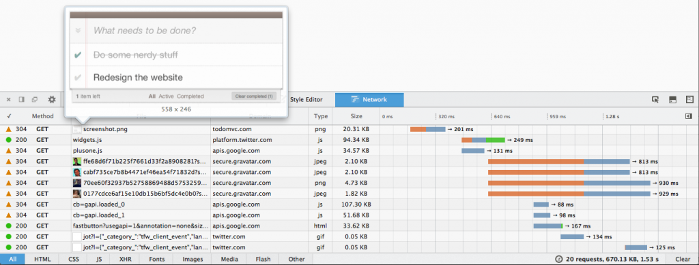
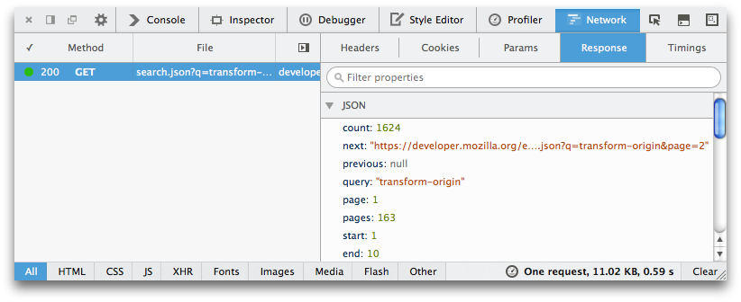
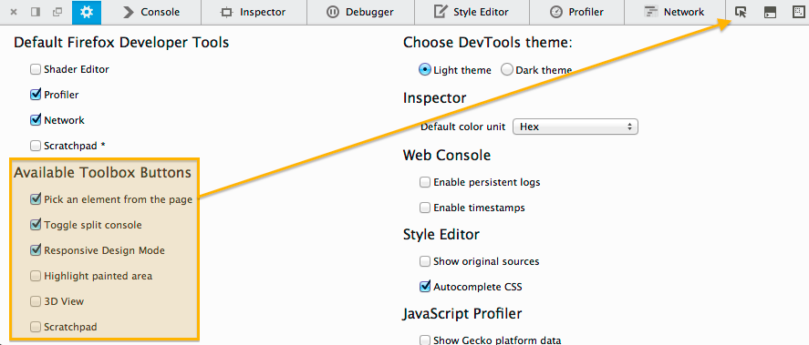

Box Model 強調功能、強化網頁主控台、Firefox OS HUD， 還有更多
Firefox 30 現在進入曙光版 (Aurora) 釋出頻道了。照慣例來看看此版本的開發者工具有哪些重要功能。
檢測器 (Inspector)
大家期待的諸多開發功能之一，就是要能強調頁面元素的「Box Model」區塊。我們很高興能宣佈 Firefox 30 已正式具備這個功能。而且 Box Model 現可用不同的顏色區塊區分不同 CSS 的設定值 (如 margin、padding、border 等)，達到更清晰的效果。

可參閱「檢測器」說明文章以進一步了解新功能，或可觀看下方短片：
而 CSS 規則檢視中，有了新的字型 (font family) 提示功能。只要將滑鼠游標置於 font-family 值之上，即可預覽該字型。(可參閱此開發討論記錄)
網頁主控台 (Web Console)
網頁主控台有多項重大更新，可檢視並引導輸出效果。
- 主控台輸出對話框可對所有 JS 物件與函式達到更好的強調效果 (可參閱此開發討論記錄)
- 強調其對應的節點，點擊之後即可從主控台跳至該節點 (可參閱此開發討論記錄)
- 新支援 console.count() (可參閱此開發討論記錄)


在主控台中執行 cd() 指令，即可在 iframes 之間切換所屬範圍 (Scope)。可參閱 cd 指令說明文件。(可參閱此開發討論記錄)

另可參閱由 Mihai 撰文說明網頁主控台即將發生的變化。他也曾撰文說明 web console API 的擴充套件。
Firefox OS
網路監測器 (Network monitor) 現可搭配 Firefox OS 運作。(可參閱此開發討論記錄)
目前 Firefox OS Developer HUD 提供記憶體追蹤 (可參閱此開發討論記錄) 與 jank 追蹤 (可參閱此開發討論記錄) 功能。另可參閱 Paul 撰文的 《Firefox OS: tracking reflows and event loop lags》以進一步了解「jank (即所謂的 event loop lag)」。

####
網路監測器 (Network Monitor)
網路監測器現具備新外觀與數項新功能：
- 新設計的網頁時間軸，真正提升了面板上的捲動效果。(可參閱此開發討論記錄)
- 只要將滑鼠游標置於某圖片網址之上，即可出現該圖片的預覽對話框。(可參閱此開發討論記錄)
- 只要是圖片類型的網路請求，則檔案名稱附近亦將顯示縮圖。(可參閱此開發討論記錄)

只要是類似 JSON 格式的網路請求，即使是純文字檔案亦將顯示物件預覽對話框。(可參閱此開發討論記錄)

####
工具箱 (Toolbox)
主控台的快捷鍵 (cmd+alt+k 或 ctrl+shift+k) 有新動作了。此快捷鍵將隨時注意網頁主控台中的輸入行，並視需要而開啟工具箱且不會關閉工具箱。可參閱 robcee 的部落格以進一步了解。(可參閱此開發討論記錄)
如果想為頂端的工具列省下一點空間，則可隱藏如程式碼速記本 (Scratchpad) 的指令按鈕。現在預設開啟的按鈕只有檢測元素 (Inspect Element)、分割主控台 (Split Console)、適應性模式 (Responsive Mode)。可透過 devtools 郵件群組進一步了解這項變更 (可參閱此開發討論記錄)。若要啟動程式碼速記本(Scratchpad)、閃爍繪圖區 (Paint Flashing)、並排顯示 (Tilt)，則勾選選項面板中的方塊即可。

最後要感謝此版開發者工具共 46 位貢獻者！為 Firefox 30 開發者工具解錯人員名單在此。
如果你有任何問題、想提出意見與功能需求，或發現任何錯誤，還是一樣可透過 @FirefoxDevTools 聯絡我們。